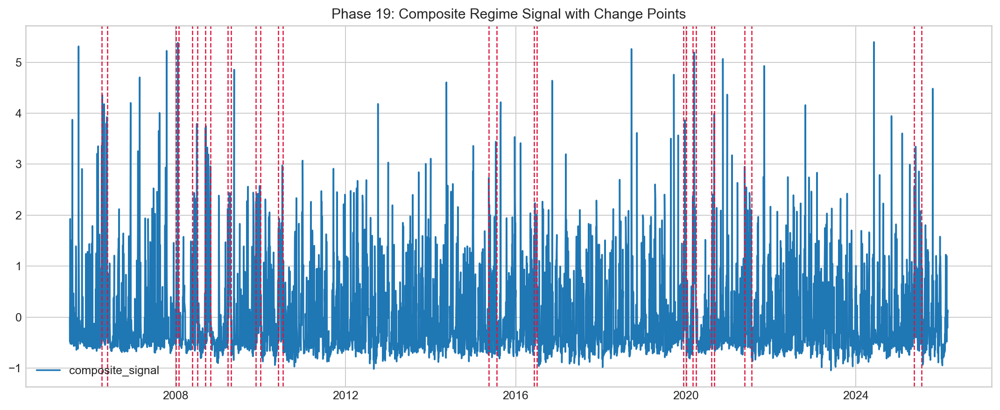
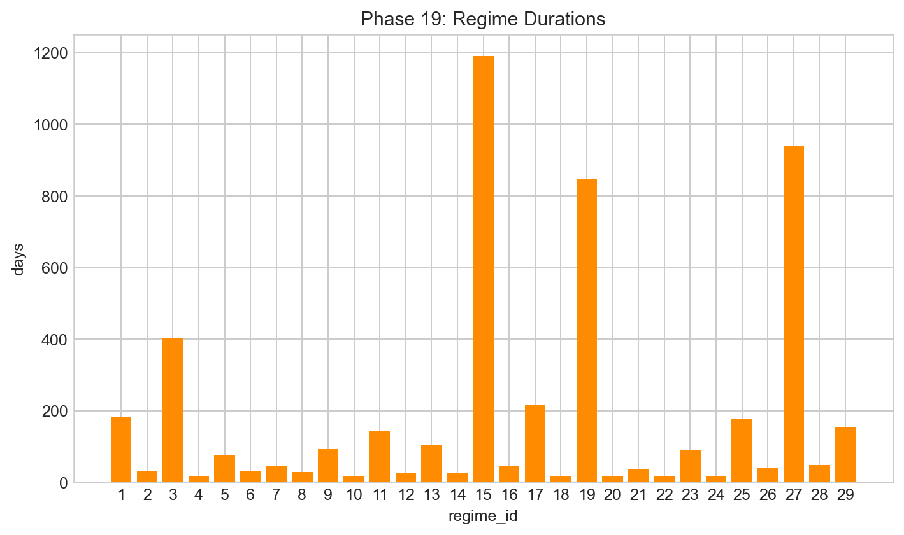
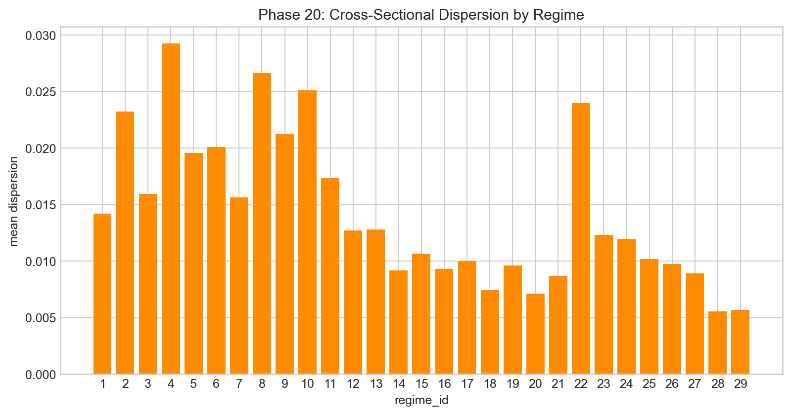

Regimes and Structural Validation
This post moves from continuous time-series analysis to explicit state segmentation.
Regimes are detected from factor-space composite signal using penalty scans with BIC-guided selection. The priority is not a single “correct” count, but persistent and interpretable segmentation that aligns with independent volatility and dispersion statistics.
What appears in regime outputs
Legacy-style runs produce higher segment counts, while strict runs compress to single-digit regimes. This is interpreted as expected sensitivity to sample strictness and objective constraints in nonstationary long-horizon systems, not as a contradiction.
The first figure group shows legacy context; the second shows phase-19 segmentation outputs and model-selection diagnostics.






Structural validation after segmentation
Segmentation quality is validated by testing whether regime labels map to measurable shifts in market-volatility, dispersion, factor share, and drawdown burden. The regime-conditioned plots show clear divergence, which is the central validation criterion.




Split robustness snapshot
Split-level checks are used to avoid single-window overfit narratives. Across splits, PC1 remains stable while effective K varies, reinforcing the same hierarchy observed throughout the project: stable systemic core, flexible secondary geometry.


Shared reference
Dictionary: same terminology map used across all pages.